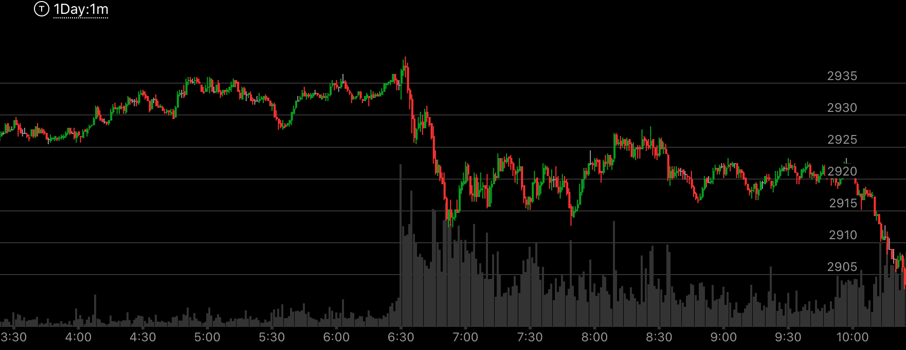
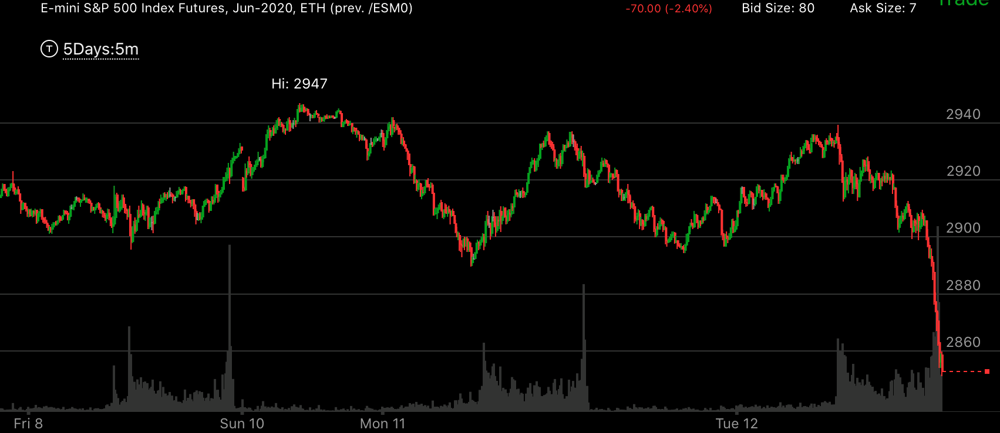
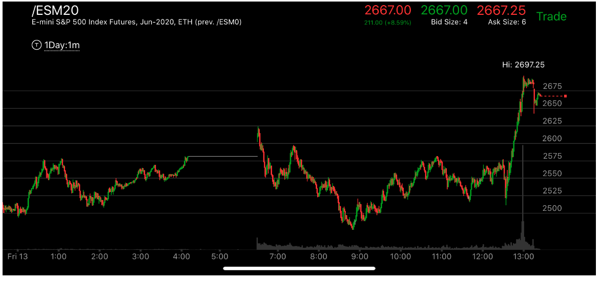
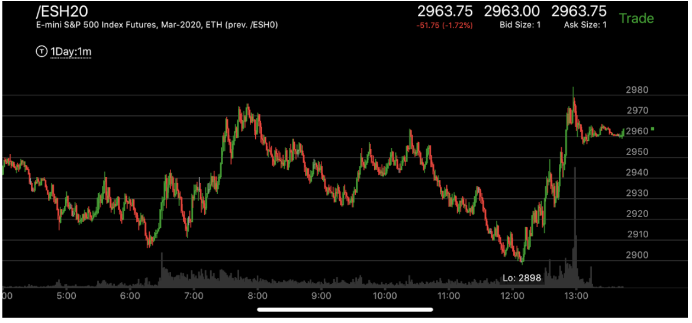
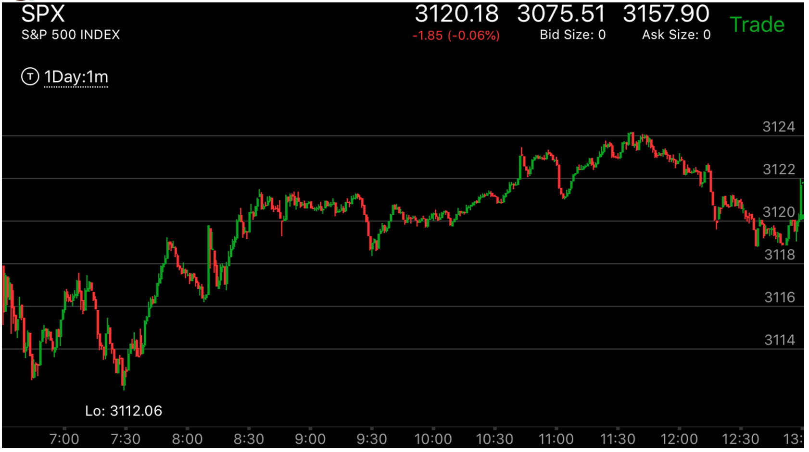
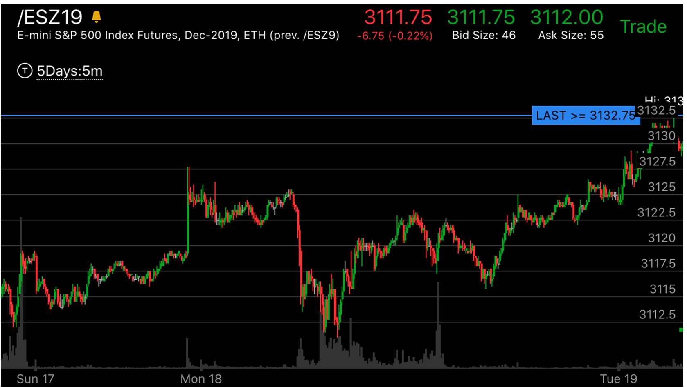
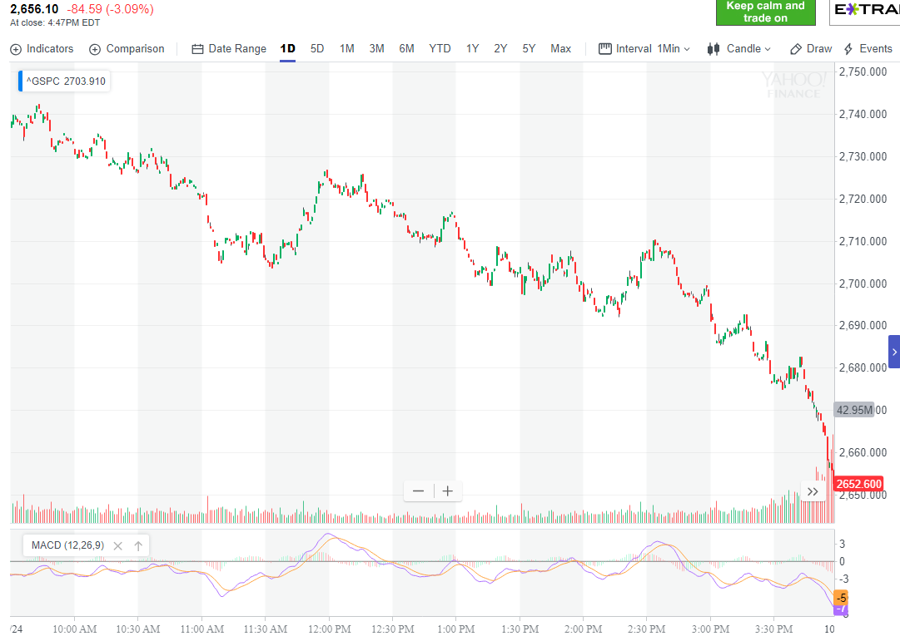
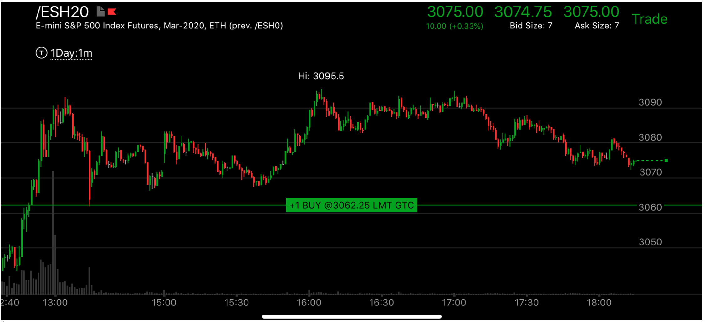
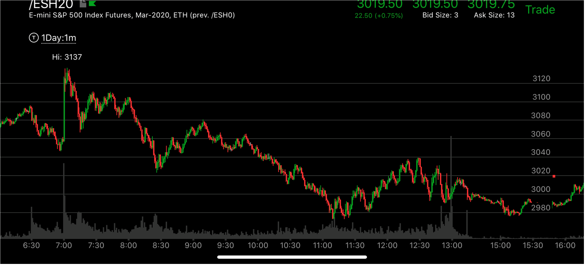

快速运动后，拉回，再次缓慢运动，超过前面的范围
- 这个走势其实是非常确定的走势，但是问题在于，要克服自己从低处做空，或者高处做多。
- 这个走势一旦出现，越过它之后，再来一个即使是很小的两段走势，大盘就反转了。
- 这个走势，它在快速创走势新高/新低后，拉回速度很快。没有很多停留，这样才是出现这个走势，如果在极点附近停留很久，
那么就真的反转了。
- 越过前面范围后，它必须本身出现相对弱势，或者两段走势。两段走势其实也是一种相对弱势
- 这个走势也会出现在比较大的反向走势当中，一般只出现一次，就足以让走势完成了。
- 这个走势会让整体走势时间变得很长，幅度也应该比较大。这个就是主要方向的走势。而如果没有这个走势。
走势本身结束的很快。说明是次要方向。


图示：周日开盘后，上涨，速度很快，产生相对弱势,其实是加速加相对弱势，应该反转的情况。
它在Mon，快速下跌，立刻拉回。这个拉回的走势形成了完成走势。说明未来会低于这个低点。然而它的走势非常复杂，两次回到高点。
看图一中，是最后下跌的情况。它冲高下跌，似乎是一个相对弱势。但是要记住，这个不是在走势的极点。而是已经在走势内部了。所以这个不是相对
弱势。更大的走势仍然在起作用，它一定要低于Mon早晨的低点。看图一，它6：30快速下跌后，立刻反弹，7：40它回到原位，再次反弹，这次反弹的点高于
前面，这样形成了下跌的相对弱势，一定会下跌。

图示：6：30刚刚开盘，它快速下跌。说明这个一定是回调，而不是真实反转。
它下跌后，出现了两段走势。7：00从低点快速反弹，又成了也给上涨的两段走势。然后再次走低。
8：00越过前面低点后，又反弹，接近前面低点，形成跨越走势。然后再次走低，9：00发生一次转折。虽然这个转折的第二浪
看起来很小，但是整个走势反转了。这个是更大的上涨走势的大幅回调。如果一直没有卖掉。此时可以买入期权。

图示：8:00反转后，它开始下跌很快，9：20它的下跌已经到了2930.然后它开始大幅拉回，
拉回的位置最高到了2963.而它的启动才是2973.非常接近。它在10：10的时候，自己出现了一个两段上涨走势，很快就结束了。
然后一路跌破新低。11：00它跌破低点后，拉回。然后再次大幅下跌，然后经过一次转折。其实就反转了。
只是它需要一个正确的形状。所以再次走低，走平，才上涨。


图示：图二里面Mon18，快速上涨后，快速拉回，遇到阻力点后，开始缓慢反弹，它未来一定会越过3127这个高点的。

图示:
11：00大盘快速下跌，然后不断的上涨，它的上涨速度很快。本身就形成了一个完成走势。12：20开始下跌。它的下跌速度很慢，可以想到，它一定会低于11：30的低点的。

图示:13:00加速冲高后，立刻拉回，然后再次冲高。然后它大跌。立刻拉回。这时可以看到它没有越过前面加速上涨的位置，
说明这个加速上涨没有被中和。16：00它创新高，然后走平。这个走势，可以看到比前面要弱，这样，它会下跌，而且考虑前面下跌的位置，它一定会低于前面的低点3060这个点的。

图示:8：30它快速下跌后，很快反弹，立刻反弹到了前面的浪的开始，然后开始缓慢下跌。到了9：30，可以看出，它要下跌了。
这个下跌速度很慢，所以一定会低于前面的3020这个低点。